Architronix Next.js template
Version - 1.0.1
Live Preview
Introduction:-
Architronix is a modern and professionally designed Next.js template tailored for architecture firms, interior
designers, and construction companies. With a clean and sophisticated layout, Architronix is crafted to showcase
your projects, highlight your expertise, and create a memorable online presence for your architectural business.
Features:-
- Responsive Design : The template is fully responsive, ensuring your website
looks great on all devices and screen sizes.
- Modern and Stylish Layout : The template features a contemporary design with
a focus on aesthetics and user experience.
- Customizable Color Scheme : Easily change the color scheme to match your brand
or personal preference.
- Flexible Grid System : The template is built on a flexible grid system,
allowing you to create unique and dynamic layouts.
- Smooth Animations : Add subtle animations and transitions to enhance the user
experience and make your website more engaging.
- Clean and Well-Structured Code : The template is developed using clean HTML5
and CSS3 code, making it easy to customize and maintain.
- Integrated Contact Form : A ready-to-use contact form is included, allowing
visitors to get in touch with you easily.
- Countdown Timer : A countdown timer to build excitement for the event and
remind visitors of the date.
- Sponsors and Partners : Logos and links to event sponsors or partners.
Install and Build
First, open your command line or terminal then type on your kyboard
- 'npm i' to install
- 'npm run dev' run the project in developer mode
- 'npm run build' to build the project
- 'npx serve@latest out' to run the build project
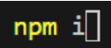
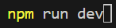
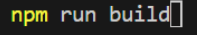
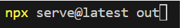
Change Layout
Easily change the header and
footer by root layout or page layout.
If you need same header and footer the full site
then you add the header and footer in the root layout
If you need a different header and footer on a different
page then you add the header and footer in the child layout.
Add Image Blur
If picture blur is required, add this placeholder='blur' attribute to the image tag.
Customizable Color
If you want to change the color. Go to the global
CSS file and change the color variable name
Reusable components :
If you change the
reusable component style then you go to that page this page calls the component and
passes a number in the props form that the specified element style will be added
when the props number matches the switch catch condition in the compnet.
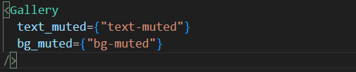
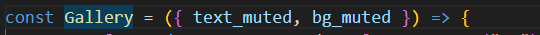
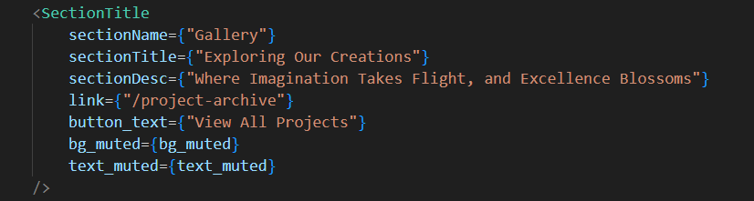
Data fetching :
-
Server side fetching
when you use a server component and you want to fetch data in this case you
first create an async function and call the API in this function. Then call
this function of your server component now you need to convert your server
component to an async function. The width and height of the image should be
given during dynamic data fetching.
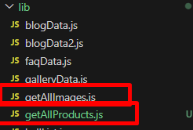
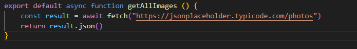
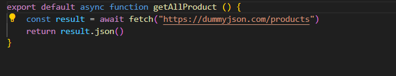
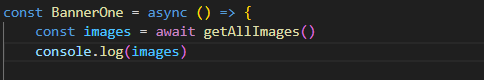
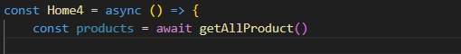
-
Client Side fetching
When you use a client component and you want to fetch data in this case you
use useEffect hooks to call the API in this hook.
-
Static Data fetching
I have stored the maximum data in the lib folder under a different file and
then called the file in the specific component.
* If you have any
further questions don't hesitate to get in touch with our support team.
Thank you very much to select Architronix Next.js template.
Developed by ThemePerch
LTD.